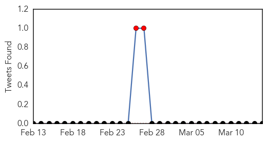
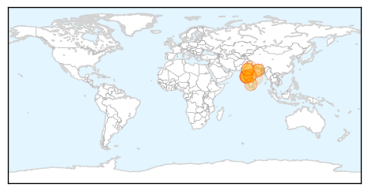

Ebola
30-Day Web Trend
0 alerts, 0 warnings

30-Day Twitter Trend
5 alerts, 2 warnings

Article Locations
Article Confidences

Top Articles:
- 1.000
- UN tally of Ebola deaths passes 10,000, most in West Africa
- 1.000
- Death Toll in West Africa's Ebola Outbreak Passes 10,000
- 1.000
- Americans Evacuated From Sierra Leone After Possible Ebola Contact
- 1.000
- Several Americans Possibly Exposed To Ebola, As Epidemic Smolders
- 1.000
- American who contracted Ebola arrives at Maryland hospital -- NationNews Barbados -- Local, Regional and International News nationnews.com
- 1.000
- More Americans May Have Been Exposed to Ebola in Sierra Leone — Naharnet
- 1.000
- Resistance to Anti-Ebola Steps Persists in Guinea, Sierra Leone
- 1.000
- Sierra Leone Health Care Workers Being Tested For Ebola In New Zealand, UK
- 1.000
- At least 10 Americans who may have come into contact with Ebola-stricken health worker in Sierra Leone flown back to US
- 1.000
- American who contracted Ebola arrives at Maryland hospital
- 1.000
- Serious condition for U.S. patient
- 1.000
- Americans Possibly Exposed to Ebola Virus Returning to U.S.
- 0.999
- US healthcare worker with Ebola in ‘serious’ condition, NIH says
- 0.999
- More US workers may be exposed to Ebola
- 0.999
- American who contracted Ebola in Africa to be treated in US
- 0.999
- Another British Healthcare Worker Infected with Ebola in Sierra Leone Flown Home
- 0.999
- Ebola: US evacuates 10 aid workers from Sierra Leone
- 0.999
- Africa's medicine men key to halting Ebola spread in Guinea
- 0.999
- First Deadly Ebola Virus Patient in Honduras Taken to Hospital
- 0.999
- U.S. healthcare worker with Ebola in 'serious' condition, NIH says
- 0.998
- UPDATE 2-At least 10 Americans being flown to U.S. after possible Ebola exposure
- 0.998
- Americans flown home after possible Ebola exposure
- 0.998
- Doctors monitor Ebola health worker
- 0.997
- Americans being flown home after possible Ebola exposure
- 0.997
- 1st LD Writethru: Ebola-infected American admitted to NIH hospital, more evaluated
- 0.997
- 1st LD Writethru: Ebola-infected American admitted to NIH hospital, more evaluated
- 0.996
- Gore nurse has nervous wait for Ebola test results
- 0.993
- Ebola scare in United Kingdom, New Zealand
- 0.991
- Four health care workers exposed to Ebola coming to Nebraska
- 0.990
- Nebraska Medicine to monitor four US health care providers exposed to Ebola
- 0.988
- Americans exposed to Ebola return for monitoring
- 0.985
- Sierra Leone Seeks Canada's Blessing As It Recovers From Ebola
- 0.985
- UK doctor under observation for Ebola
- 0.984
- U.S. health worker with Ebola admitted to NIH unit
- 0.983
- Kiwi nurse tests negative for Ebola
- 0.982
- Sierra Leone seeks Canada's bank-bid blessing
- 0.981
- Ebola care nurse tests negative for disease
- 0.981
- Ebola care nurse tests negative for disease
- 0.981
- Ebola care nurse tests negative for disease
- 0.980
- Webb, Janish among O's on mend
- 0.978
- Ebola: Health worker unlikely to be discharged from RVI before Monday
- 0.970
- Honduras: Ministry of Health dismisses any case of Ebola in the country
- 0.962
- Ebola Treatment Centre Update, Media release, 14 Mar 2015, Australian Minister for Foreign Affairs, The Hon Julie Bishop MP
- 0.960
- Kiwi health worker awaits Ebola results
- 0.959
- Encouraging efforts in restoring our ruined health sector
- 0.958
- The Ebola diary: Dr Kwan Kew Lai's harrowing journal of her time in Liberia
- 0.951
- 'Incidents of Early Marriage Happening At a Disturbing Rate'
- 0.951
- VP Expulsion Not Unprecedented
- 0.951
- Watch closely and explain frequently: Liberia's Ebola lessons
- 0.951
- Amid US-South Korea war games North Korea fires missiles
Showing top 50 articles...
Top Tweets:
- 0.943
- Four Patients Exposed To Ebola Coming to Nebraska Medicine - 1011now http://t.co/z22V0QyJQa ebola EVD
- 0.940
- Newest American Ebola Patient Represents A Biopharma Milestone - Forbes http://t.co/aPou8ff5sh ebola EVD
- 0.910
- First suspected case of Ebola reported in Honduras - Atlanta Journal Constitution http://t.co/tZHmqvvS3C ebola EVD
- 0.908
- As Ebola fades, La Jollan visits Liberia - U-T San Diego http://t.co/GFVqznWOz4 ebola EVD
- 0.894
- Vaccines Face Same Mistrust That Fed Ebola - New York Times http://t.co/PLqxiYCRz5 ebola EVD
- 0.885
- American in Honduras checked for Ebola released from hospital - Reuters http://t.co/7GToRauDeH ebola EVD
- 0.872
- Americans Evacuated After Possible Ebola Contact - New York Times http://t.co/fd8SO94MFP ebola EVD
- 0.872
- Americans Evacuated After Possible Ebola Contact - New York Times http://t.co/XdaDbjJnGD ebola EVD
- 0.858
- Smart 'band-aid' could help world beat Ebola - Mashable http://t.co/Cg12JDy3hY ebola EVD
- 0.833
- Four patients exposed to Ebola to be treated in Nebraska - WXIA-TV http://t.co/8wpLOwLhhj ebola EVD
- 0.809
- RT: CDC: Americans being flown home from Sierra Leone for Ebola concerns. http://t.co/w0Sbt8gKgu
- 0.774
- Ebola scare: Nurse in strict isolation - New Zealand Herald http://t.co/EsRB9v2dFI ebola EVD
- 0.612
- Meet the man leading Britain's fight against Ebola - The Guardian http://t.co/qkg9Q5nDWO ebola EVD
- 0.533
- AFD blog `CDC:Investigating Additional Potential Ebola Exposures To American Citizens In West Africa' http://t.co/QVGKnHq4DE
Swine Flu
30-Day Web Trend
7 alerts, 16 warnings

30-Day Twitter Trend
2 alerts, 0 warnings

Article Locations
Article Confidences

Top Articles:
- 1.000
- Swine flu in India: 6 people from Mizoram suspected from Swine flu, samples sent to Kolkata
- 0.997
- Govt to vaccinate 3,000 workers
- 0.996
- Oman bans poultry from North India on Avian Influenza fear, but no travel ban despite surge in H1N1 cases
- 0.989
- Docs advise rest even after swine flu meds
- 0.988
- H1N1 claims 4 lives in Mumbai
- 0.986
- Flu test heat on hospital
- 0.985
- Early summer, high temperature make Madurai safe from H1N1, claim doctors
- 0.974
- Swine flu toll in Rajasthan 371
- 0.972
- Swine flu toll in Rajasthan 371
- 0.951
- Swine flu claims 1stlife in Bihar
- 0.924
- Two more deaths take H1N1 toll to 30 in city
- 0.836
- Central institute out of funds for swine flu tests, Bengal pitches in
- 0.736
- ‘Not notifying TB patients unethical’
- 0.642
- BMC’s helpline gets 761 calls
- 0.556
- Suspected Swine Flu Case In Srikakulam
Top Tweets:
-
No tweets found for Mar 14, 2015